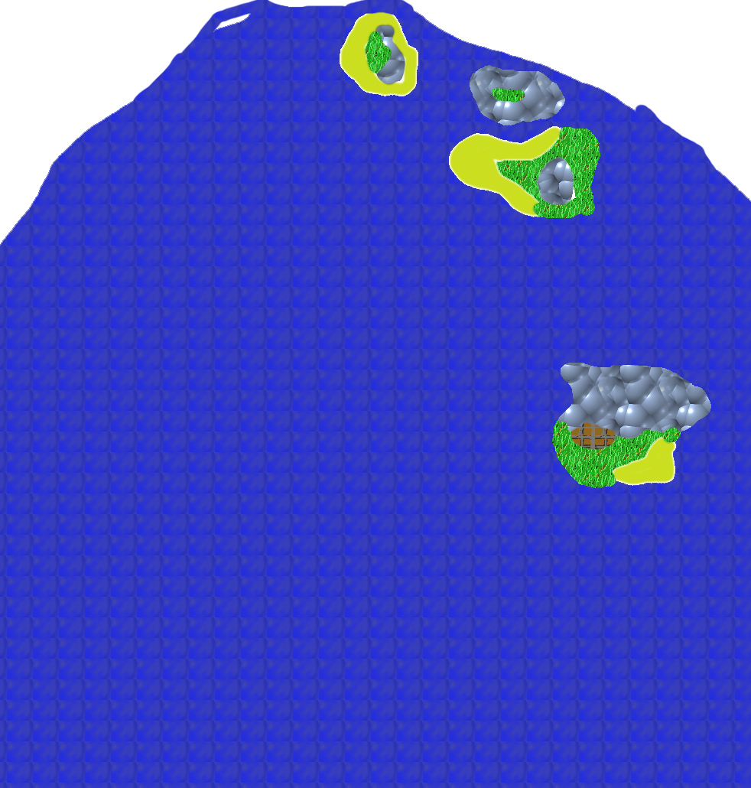

back
Five Island Sea

The Five Island Sea is a region which includes 4 islands where a multitude of species lives.
Cities: The greatest city in the Five Island Sea is not one on an island, but instead the Merfolk capital of Antassia. The city is at the bottom fo the Sea and it is very rarely visited by adventurers for this reason, therefore little is known about it. Another important city is Ssansiphan, a major city for Naga and their Nagaji situated on the 4th island. The Naga are hostile to outsiders and therefore going anywhere near this island can prove very deadly.
Lastly, there is a Tengu Nest named Twooksee on the second island. It is hidden in a valley protected by mountains, it is impossible to reach it if one cannot fly.
Landmark:
There is a cavern rumored to be filled with treasures on the third island, unfortunately it has long been surmerged by water and it might prove impossible to explore it properly.
Environment:
The Five Island Sea is an aquatic region, the sea is usually calm and easily navigable, but it is also filled with Naga and Tengu raider who are simply waiting for your unprotected ship to arrive to loot it all. It is quite the temperate region and the island have enough on them to be habitable.
Wildlife and Monsters:
There are not that many wildlife on the island themselves, but the sea is brimming with Life. Between shark and deadly octopus, to the Nagas and Tengus, there is a lot to be worried about when travelling through the Five Island Sea. There are also tales of mariners who claim a giant octopus nicknamed the Lurker Below lives in this sea and attack ship by swallowing them whole.